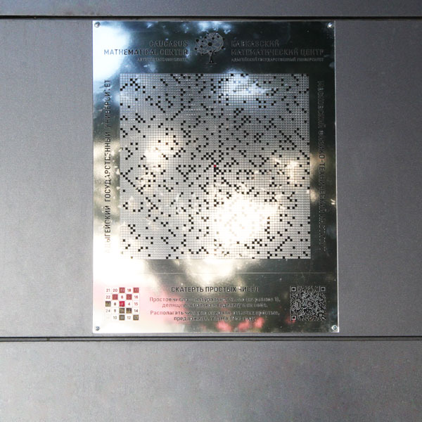

11 / Теория чисел
Скатерть простых чисел
Готово
Что это за экспонат
Скатерть простых чисел — это «ковёр» из натуральных чисел. Числа выложены по спирали, начиная с центра, а простые среди них отмечены. Центральная часть экспоната — так называемая скатерть Улама.
Простое число — это натуральное число, большее единицы, которое делится только на единицу и на само себя. Например, 2, 3, 5, 7, 11, 13. Числа, не являющиеся простыми, называют составными.
Математическая идея
Идею выписывать числа по спирали и отмечать простые предложил математик Станислав Улам в 1963 году. Если посмотреть на получившуюся картинку, в глаза бросаются прямые линии: простые числа часто выстраиваются вдоль диагоналей. Значит, их расположение не выглядит полностью случайным.
Числа вдоль одной диагонали записываются квадратичным выражением от номера шага, поэтому на некоторых диагоналях простых чисел много, а на других почти нет, потому что там стоят только составные числа.
При этом простой формулы, которая бы выдавала каждое следующее простое число, не существует. Известен только очень сложный результат Ю. В. Матиясевича: можно записать многочлен от нескольких переменных, неотрицательные значения которого при неотрицательных значениях переменных — это в точности все простые числа. Но для практического поиска простых чисел он не подходит.
Простые числа важны и в жизни. Любое число раскладывается в произведение простых множителей, а на трудности такого разложения для очень больших чисел основаны современные способы шифрования.
Попробуйте сами
- Найдите на экспонате центр спирали и пройдите по ней глазами несколько витков. Куда она закручивается?
- Отыщите прямые линии из простых чисел. В какую сторону они идут: по вертикали, по горизонтали или по диагонали?
- Дома нарисуйте на клетчатой бумаге квадрат 9 × 9. Впишите в центр число 1 и запишите числа от 2 до 81 по спирали. Отметьте простые числа. Какие закономерности вы заметили?
- Вопрос для размышления: почему на спирали не встретится ни одного простого числа вдоль линий, где все числа чётные, кроме самого числа 2?
Страница оригинала
«Скатерть простых чисел» на museum.adygmath.ru ↗
Факты сверены со страницей оригинала, статьёй о Математическом парке на портале Math-Net.Ru и описанием экспонатов на сайте Фестиваля науки.
Это учебная страница собственной копии сайта.